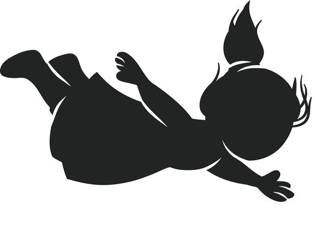

Home
About Us
Contact
Sign Up
Log In

Which Option Describes You Best?
I am motivated by achievement
I am motivated by Appreciation
Which Option Describes You Best?
I like to learn new things by observation and practical
I like to learn new things through intensive thinking, Imagination and general concepts
Which Option Describes You Best?
I like to focus on the present and what exists in front of me
I like to focus on future and the possibilities
Which Option Describes You Best?
l like to live in present and take learning from past
I like to live in future and take learning's from present
Which Option Describes You Best?
l like to live in present and take learning from past
I like to live in future and take learning's from present
Which Option Describes You Best?
I prefer to trust my actual experience
I prefer to trust my gut instincts
Which Option Describes You Best?
I prefer practical solutions in solving issues
I prefer creative solutions in solving issues
Which Option Describes You Best?
I focus more on the details and facts in making decisions
I usually use my intuition in making decisions
How do you take the decisions?
I usually take decisions with my head and focus on facts
I usually take decisions with my heart and consider feelings
How do you take the decisions?
I usually take decisions with my head and focus on facts
I usually take decisions with my heart and consider feelings
Continue
Subscribe Us
Subscribe
Address:
Mihintale Road, Anuradhapura
Phone:
+94 77 85 86 566
Email:
heartsdesire@gmail.com
Social Media:
Made by Demons